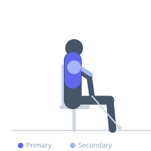
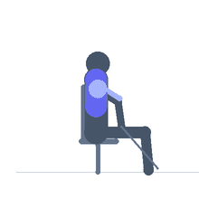

Exercise guide / Seated Cable Row
Seated Cable Row
The seated cable row is a horizontal pulling exercise using a low-pulley cable machine. It trains the mid and upper back through scapular retraction and arm pulling, while maintaining a constant cable tension throughout the movement. It is particularly effective for developing back thickness and improving posture.
Primary muscles
rhomboid major
trapezius middle
latissimus dorsi
Secondary muscles
deltoid posterior
biceps brachii long head
brachialis
Stabilizers
erector spinae
Equipment
Seated Cable Row Machine


Starting position
- Sit on the seated row machine with feet on the foot rests, knees slightly bent. Grasp the cable attachment with both hands. Sit tall with a neutral spine and slight forward lean from the hips.
Setup
- Attach a close-grip or straight bar handle. Set a weight that allows full range of motion with controlled form.
Steps
- Sit upright with a neutral spine, then row the handle toward the lower abdomen.
- Drive the elbows behind the torso and squeeze the shoulder blades together firmly at the peak.
- Slowly return the handle to the starting position, allowing the shoulder blades to protract fully for a complete stretch.
Coaching cues
- Sit tall as if a string is pulling your head to the ceiling
- Row with your elbows, not your hands
Breathing
- Exhale as you row. Inhale as you return.
Range of motion
- Full protraction at the front, full retraction and row to the lower abdomen at the back.
Tempo
- 2-1-2-0
Common mistakes
- Using excessive forward lean and momentum from the lower back to initiate each rep
- Pulling the handle to the chest rather than the abdomen
- Not allowing shoulder blades to fully protract at full extension
Safety
- Avoid rounding the lower back when leaning forward
- Keep the torso upright throughout — only the arms and shoulder blades should move
Training
- hypertrophy: 8–15 reps
- endurance: 15–20 reps
- hypertrophy: 3–4 sets
- endurance: 2–3 sets
- Rest: {'hypertrophy': 90, 'endurance': 45}